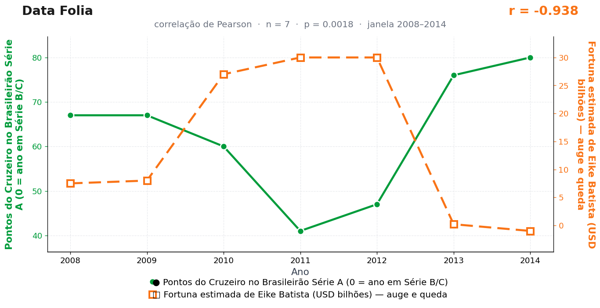

Post de 09/11/2026
A teoria
Minas distribui confiança com critério. Em ciclos de grandeza esportiva, a atenção pública, a euforia e a narrativa de sucesso se concentram no Cruzeiro.
Esse deslocamento altera o clima ao redor ao redor de fortunas gigantes. Projetos empresariais baseados em expectativa precisam da mesma substância que a campanha celeste absorve a cada vitória.
A gangorra funciona pela disputa de grandeza. Quando o clube ocupa o topo da imaginação coletiva, sobra menos espaço para outro império prometer ascensão.
Eike não retornou as ligações; o Cruzeiro tampouco. A gangorra, indiferente ao silêncio das partes, segue rangendo no ar — e o nosso departamento de grandeza mineira segue anotando.
A teoria é ficção; a correlação é real: r = −0,94 (n = 7, p = 0,002).
Os dados por trás

- Pontos do Cruzeiro no Brasileirão Série A (0 = ano em Série B/C) — 7 pontos anuais, período 2008–2014. Fonte: CBF / Wikipedia — Campeonato Brasileiro Série A.
- Fortuna estimada de Eike Batista (USD bilhões) — auge e queda — 7 pontos anuais, período 2008–2014. Fonte: Forbes / Bloomberg — perfis anuais.
Como as correlações deste site são encontradas — e por que você não deve confiar nelas — está explicado na nossa metodologia.
Por que isso acontece?
As duas curvas são montanhas-russas que, por acaso, se espelham. A fortuna de Eike sobe de 7,5 para 30 bilhões de dólares (2010–2012) e desaba até um valor negativo em 2014; o Cruzeiro faz o caminho inverso, caindo até 41 pontos em 2011 e explodindo nos títulos de 2013–2014 (76 e 80 pontos). O coeficiente de Pearson, que só enxerga movimento linear conjunto, lê o espelhamento como r = −0,94 — sem saber que um lado é mercado de capitais e o outro é futebol.
Boa parte da força do número vem das pontas: o colapso de Eike coincide, no calendário, com o bicampeonato celeste. Dois eventos extremos e independentes, alinhados por sorte em 2013–2014, dominam o cálculo em uma amostra de apenas 7 pontos. Sem esses dois anos, a história desmonta.
Repare ainda no dado de 2014: fortuna de "−1 bilhão". Estimativas jornalísticas de patrimônio são imprecisas por natureza — arredondadas, defasadas, disputadas. Correlacionar uma série dessas com qualquer coisa já nasce frágil; nós correlacionamos com a tabela do Brasileirão porque a fragilidade, aqui, é o produto.
Post de 09/11/2026 · publicado também no Instagram @datafolia.